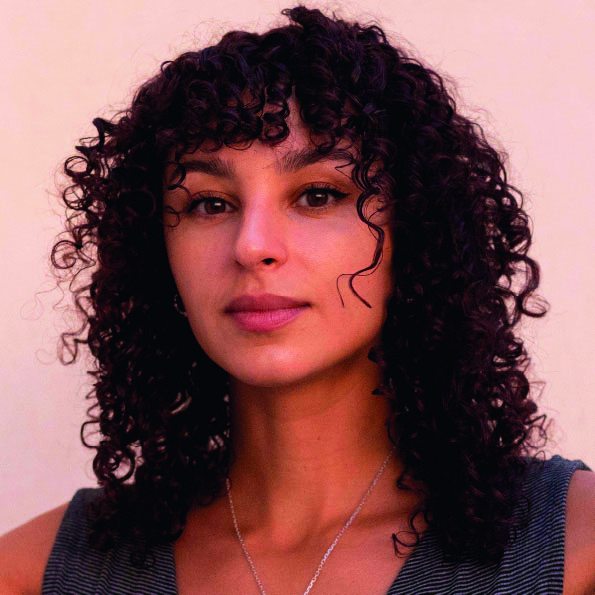

Contact
sophia@etik.comÀ propos
Formée à l'histoire de l'art et au cinéma, Sophia Zolnowski développe une pratique du regard ancrée dans le documentaire et la chronique.
Chroniqueuse cinéma pour l'émission Cinérama, diffusée sur une quarantaine de radios indépendantes (RPH SUD, Divergence FM), elle co-anime également Cinécritures, un atelier mensuel d'exploration entre écriture et image.
Ses projets documentaires — Scenius, Le Château — naissent d'une attention portée aux liens, aux lieux et à ce qui se joue entre les gens. Une matière brute accumulée depuis plusieurs années : captations, immersions, repérages. Des rushes, des intentions, une démarche en construction.
Elle candidate au Master 2 Création documentaire de l'Université Paul Valéry de Montpellier pour donner une forme à ce qui cherche encore la sienne.